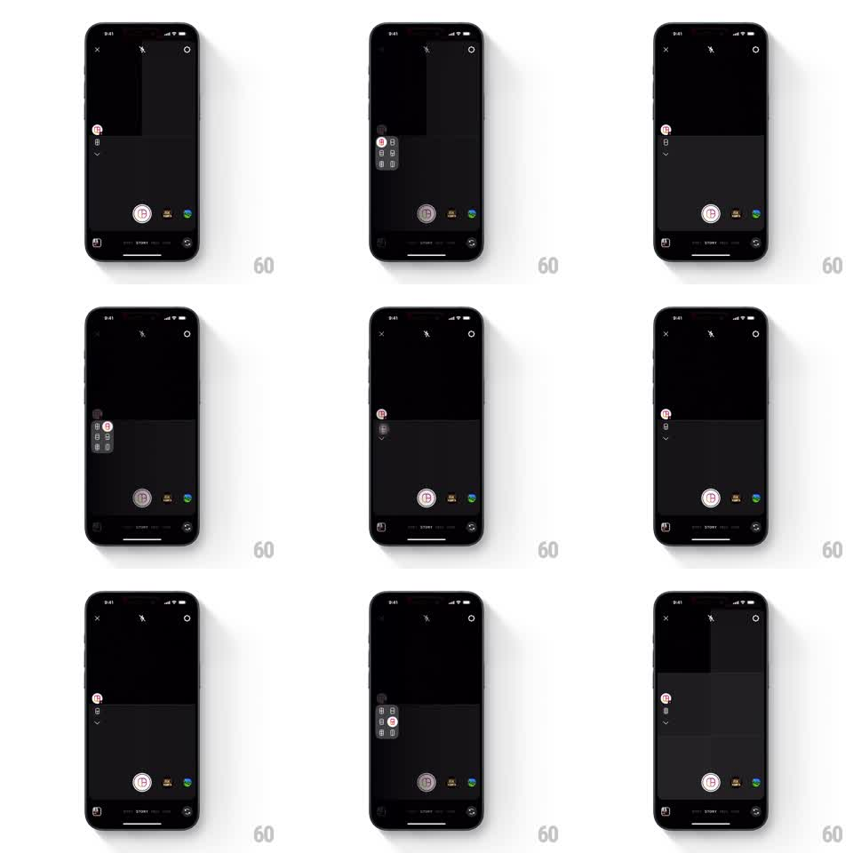

Media
Frame-by-frame

Rebuild this interaction 1:1: Instagram Stories' layout grid selector - tapping the layout icon on the story camera rail expands a floating panel of grid options, and picking one morphs the panel back into the icon, which now wears the selected grid.

Rebuild this interaction 1:1: Instagram Stories' layout grid selector - tapping the layout icon on the story camera rail expands a floating panel of grid options, and picking one morphs the panel back into the icon, which now wears the selected grid. ## Integration Integration: stack-agnostic spec - springs given as stiffness/damping, timed motions as duration + curve; map every value to your framework and animation library of choice. ## Scene The Instagram Story camera (dark viewfinder, shutter button bottom center, tool rail on the left edge). The rail's layout icon (a small grid glyph) expands on tap into a floating panel of six layout options (2-cell, 3-cell, 4-cell, 6-cell grids in different splits). Selecting a layout collapses the panel into the rail icon, and the viewfinder draws the chosen grid's frame guides. ## Motion spec Pattern: expanding layout panel with icon morph, gesture-driven. - On tap, the panel grows out of the rail icon (spring stiffness 320 damping 24): a rounded dark card with the grid options scaling in (0.8 to 1) and the option cells staggering in (30ms apart). - The rail icon fades as the panel emerges - they never coexist. - Tapping an option highlights it (brief scale to 1.1, 150ms), then the panel shrinks back into the rail (250ms, ease-in), the icon morphing to show the selected grid arrangement. - The viewfinder then draws the layout's frames: thin white guides stroking in (300ms, ease-out). ## Calibration - The panel opens toward the canvas, anchored at the rail icon's position. - Collapse is the exact reverse path of expansion. ## Reduced motion Panel fades in and out. ## Don't miss - The icon after selection is the chosen layout's glyph, not the generic grid. - The rest of the rail tools stay put while the panel opens.